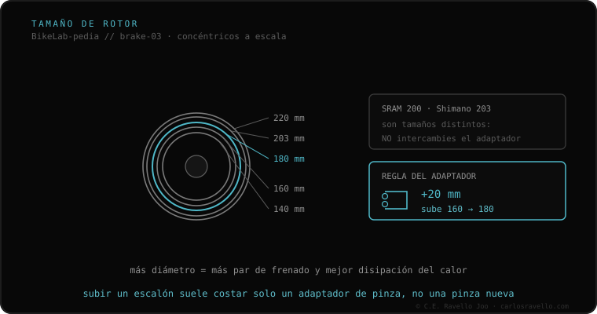

El tamaño del rotor es su diámetro, y escala la potencia y la disipación de calor del freno. Tamaños estándar: 140, 160, 180, 200, 203 y 220 mm. Más grande = más brazo de palanca (frena más con la misma fuerza en la maneta) y más superficie para no recalentarse. Ojo a una trampa: SRAM usa 200 mm y Shimano usa 203 mm, y no se intercambia el adaptador. Para subir de tamaño con la misma pinza se usa un adaptador (+20 mm = 160→180).
Subir el rotor es la mejora de freno más barata: más potencia y menos fade sin cambiar la pinza. Pero hay que respetar el máximo del cuadro.
Pasar de 160 a 203 mm sube el torque de frenado un 25–30 % sin tocar la maneta, y añade masa para disipar calor en descensos largos. Pero hay un detalle que arruina montajes: SRAM estandarizó 200 mm y Shimano 203 mm. Un adaptador de 203 con un rotor de 200 (o al revés) deja la pinza desalineada mordiendo el borde. Respeta la marca de tu adaptador.

El rotor debe respetar el tamaño máximo que indica el fabricante de tu cuadro y horquilla (montar 203 en un cuadro certificado para 160 puede fracturarlo). La pinza se adapta al tamaño con el adaptador correcto, respetando la marca (SRAM 200 / Shimano 203). El montaje en el buje (6 tornillos o Center Lock) no cambia con el tamaño.
Si no sabes qué anclaje, rotor o líquido usa tu freno, mándanos el caso. Diagnóstico real, sin venderte nada. Escríbenos por WhatsApp
Son decisiones de ingeniería de cada marca. La consecuencia práctica: un adaptador de 200 y uno de 203 no son intercambiables; mézclalos y la pinza muerde mal el disco.
Alrededor de 25–30 % más torque de frenado con la misma fuerza en la maneta, más disipación de calor. Necesitas un adaptador de pinza.
No: respeta el tamaño máximo que certifica el fabricante. Solo horquillas robustas (enduro/DH) admiten 220 mm.
© 2026 BikeLab Studio. Contenido bajo CC BY 4.0: puedes copiarlo, traducirlo y publicarlo, incluso con fines comerciales. La cita es obligatoria. Sin atribución, la licencia se revoca de forma automática (CC BY 4.0, §6.a) y el uso pasa a ser una infracción de derechos de autor: solicitamos la retirada del contenido y su desindexación. · Diseño y propiedad: Carlos Ravello Joo